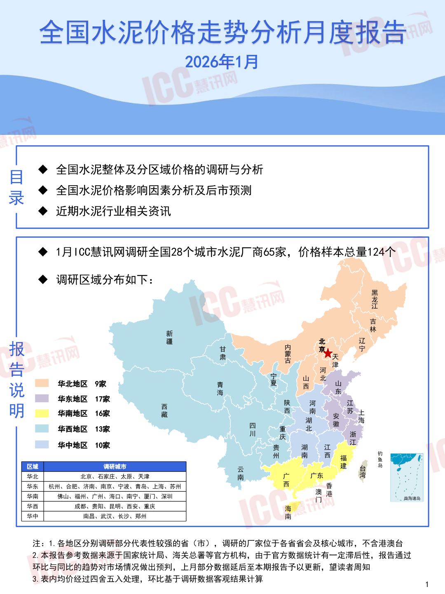
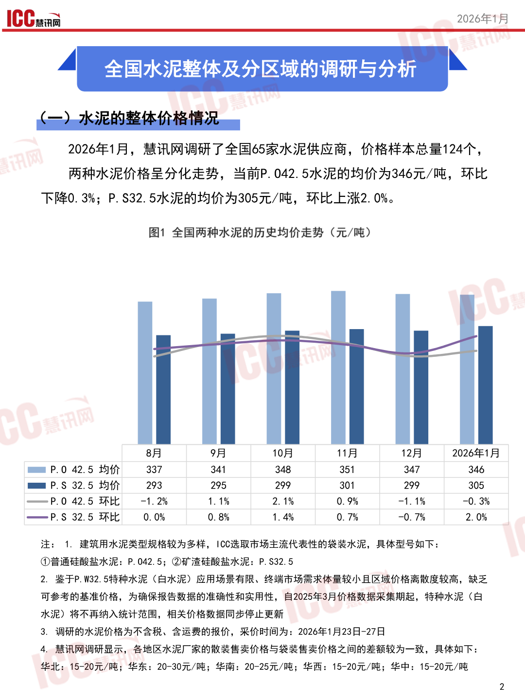
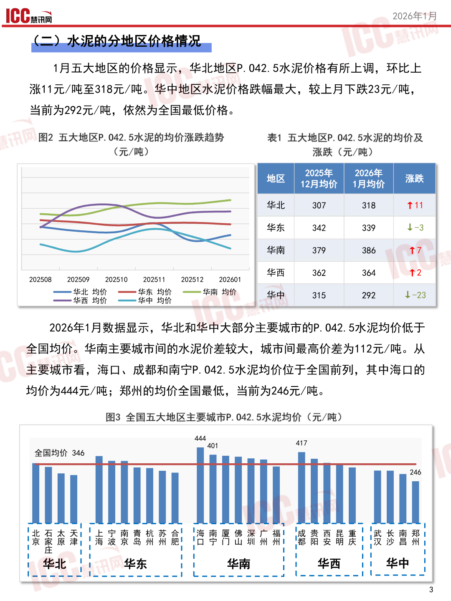
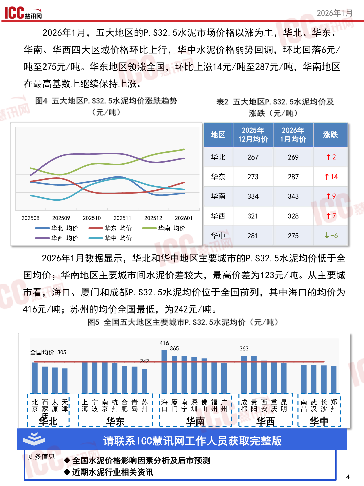

泥价格走势分析月度报告
全国水泥价格走寿报告
2026年1月
目“全全国水泥整休及分区域价格的调研与分析
录人全国水泥价格影响因素分析及后市预测
人近期水泥行业相关资讯
人1月15C正讯网调研全国28个城市水泥厂商65家，价格样本总量124个 人调研区域分布如下: 江 新AN 报人 其最关 4河津 、\、华北地区9家青夏西山 说海东
华东地区“17家四下所相
明华南地区16家藏西直本
华西地区”13家前隐北庆
华中地区”10家贵湖江本
州西鱼一史7
区域调研城市二过二凡区攻
注:1.各地区分别调研部分代表性较强的省〈市)，调研的厂家位于各省省会及核心城市，不含港澳台
2.本报告参考数据来源于国家统计局、海关总署等官方机构，由于官方数据统计有一定滞后性，报告通过
环比与同比的趋势对市场情况做出预判，上月部分数据延后至本期报告予以更新，望读者周知
3.表内均价经过四舍五入处理，环比基于调研数据客观结果计算1
查看原版第1页

1CCama2026年/户 TEST 2026年1月，慧讯网调研了全国65家水泥供应商，价格样本总量124个， 两种水泥价格呈分化走势，当前P.042.5水泥的均价为346元/吨，环比 下降0.3%;P.S32.5水泥的均价为305元/吨，环比上涨2.0%。
图1全国两种水泥的历史均价走势〈元/吨)
| 8 月 | 9 月 | 10 月 | 11 月 | 12 月 | 2026 年 1 月 | |
|---|---|---|---|---|---|---|
| PE P.0 42.5 | 均 价 337 | 341 | 348 | 351 | 347 | 346 |
| EE P.S 32.5 | 均 价 293 | 295 | 299 | 301 | 299 | 305 |
| 一 一 pP.0 42.5 | 环比 一 1. 2% | 1. 1% | 2. 1% | 0.9% | 一 1. 1% | -0. 3% |
| 一 P.S 32.5 | 环比 0. 0% | 0.8% | 1. 4% | 0. 7% | 一 0. 7% | 2. 0% |
注:1，建筑用水泥类型规格较为多样，10C选取市场主流代表性的袋装水泥，具体型号如下:
中普通硅酸盐水泥:P.042.5;@和矿渣硅酸盐水泥:P.S32.5 2，鉴于P.W32.5特种水泥《〈白水泥)应用场景有限、终端市场需求体量较小且区域价格离散度较高，缺乏 可参考的基准价格，为确保报告数据的准确性和实用性，自2025年3月价格数据采集期起，特种水泥〈白 水泥)将不再纳入统计范围，相关价格数据同步停止更新 3，调研的水泥价格为不含税、含运费的报价，采价时间为:2026年1月23日-27日 4，慧讯网调研显示，各地区水泥厂家的散装售卖价格与袋装售卖价格之间的差额较为一致，具体如下 华北:15-20元/吨;华东:20-30元/吨;华南:20-25元/吨;华西:15-20元/吨;华中:15-20元/吨
查看原版第2页

1CCaa2026年人月 1月五大地区的价格显示，华北地区p.042.5水泥价格有所上调，环比上 涨11元/吨至318元/吨。华中地区水泥价格跌幅最大，较上月下跌23元/吨， 当前为292元/吨，依然为全国最低价格。
图2五大地区p.042.5水泥的均价涨跌趋势表1五大地区P.042.5水泥的均价及
12月均价|1月均价
| 二 | 华东 | 342 | 339 | 业 -3 | ||||
|---|---|---|---|---|---|---|---|---|
| 华北 | 307 | 318 | T11 | |||||
| 华南 | 379 | 386 | T7 | |||||
| 202508 202509 | 202510 | 202511 | 202512 | 202601 | 华西 | 362 | 364 | 2 |
一然答一知名一策短|和352
2026年1月数据显示，华北和华中大部分主要城市的P._042.5水泥均价低于 全国均价。华南主要城市间的水泥价差较大，城市间最高价差为112元/吨。从 主要城市看，海口、成都和南宁p.042.5水泥均价位于全国前列，其中海口的 均价为444元/吨;郑州的均价全国最低，当前为246元/吨。
图3全国五大地区主要城市P.042.5水泥均价〈元/吨)
440417
全国均价346
查看原版第3页

1CCs2026年1月 2026年1月，五大地区的P.S32.5水泥市场价格以涨为主，华北、华东、 华南、华西四大区域价格环比上行，华中水泥价格弱势回调，环比回落6元/ 吨至275元/吨。华东地区领涨全国，环比上涨14元/吨至287元/吨，华南地区 在最高基数上继续保持上涨。
图4五大地区P.S32.5水泥均价涨跌趋势表2五大地区P.S32.5水泥均价及
(元/吨)涨跌〈元/吨)
12月均价|1月均价
| -一 | 一 | 一 | 华北 | 267 | 269 | T2 | |
|---|---|---|---|---|---|---|---|
| 华东 | 273 | 287 | 人 14 | ||||
| 一 | 华南 | 334 | 343 | T9 | |||
| 202508 202509 | 202510 | 202511 | 202512 202601 | 华西 | 321 | 328 | T7 |
一一华北均价”一一华东均价”一一华南均价
2026年1月数据显示，华北和华中地区主要城市的P.S32.5水泥均价低于全 国均价，华南地区主要城市间水泥价差较大，最高价差为123元/吨。从主要城 市看，海口、厦门和成都P.S32.5水泥均价位于全国前列，其中海口的均价为 416元/吨;苏州的均价全国最低，为242元/吨。
图5全国五大地区主要城市P.S32.5水泥均价〈元/吨)
416
全国均价30522
1!北石太天|1上宁南杭合青苏1!海庆南深佛福广|!成贵西重昆11南武长孝| !京案怖吓1海流宗州大名放1ID门宁扣山州州!者大安庆靖!中汉小儿|
| | 集 北 | :华东 | 1 S 南 | :4 华西 | 1 华中， | ||
|---|---|---|---|---|---|---|
| 心 2 | 请 | 联系 100 | 慧 讯 网 工作 | 人 员 获 取 完 | 整 版 |
更多信息“儿全国水泥价格影响因素分析及后市预测
人近期水泥行业相关资讯4
查看原版第4页

AN本 专注让我们更专业!
看讯网在瑞达恒各分公司的联系方式
Www.rccgroup.cn”www.iccchina.com
查看原版第5页

瑞达恒 5EEESULA一DERTc
ZEsSSSS1人研立院
EN板块上线了
2SN二央线
PASSSSSNNNA专注让我们更专业
ETASSSNS和.AE人0区 SSSSN
@聚焦于工程领域的行业研究报告
@@对行业实时趋势和国家产业政策的研究与解读
@@为工程行业客户提供专业的第三方视角和精准的市场分析 专注让我们更雪上，
5全研究取信于工程多9行业基究报告行业区时姑的和Ch1人
全于[AAS|量久册
和为工理行业客户提供专业第三方视角和六1隐
四行业报告。团委研究
2国
查看原版第6页